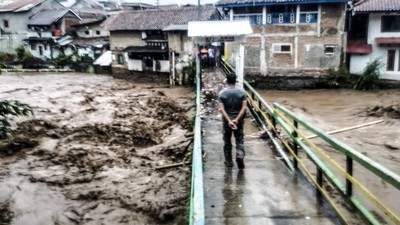

Source: liputan6.com
The iconic Braga Street, known for its scenic buildings and delicious foods, was mildly inundated
by a flood yesterday (11/01/2024). The flood was caused by an overflow of the Cikapundung River, leaving water
damage in its wake.
Although the damage to the street itself was minimal, as the main force of the flood struck mainly the nearby
areas, visitors are ought to be careful when visiting Braga Street. A figure of the Bandung Tourism Board, Benny
Bachtiar, said that while the affected areas are mainly in the back of Braga, visitors should still exercise
caution and not visit the area around Cikapudung.
He added that both visitors and vendors on the street should also be aware of the dangers of the pouring water.
As the intensity of the rain is still on the heavy side, people on the street should also exercise caution in
case of any unwanted mishaps and circumstances.
the flood has so far not been reported to claim any lives, both near Braga Street or in it.
This article is a translation of the following article:
https://www.liputan6.com/lifestyle/read/5503515/nasib-wisata-jalan-braga-bandung-setelah-banjir-bandang-akibat-limpahan-air-sungai-cikapundungCimahi
Road closures within Cimahi to make way for markets and bazaars
24 Mar 2024

Bandung
PT Kereta Api Indonesia pledges to assist the Eid Al-Fitr movers
12 Jan 2024
Gedung Sate
Gedung Sate Museum became the site of demonstrations regarding perceived inability of the government
19 Mar 2024